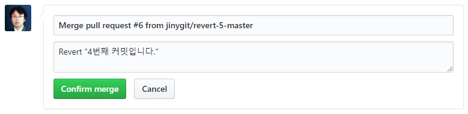

지속적인 작업을 위해서는 포크 저장소의 관리가 필요합니다. 프로젝트 저장소와 포크 저장소는 서로 다른 원격 저장소입니다.
원래의 저장소를 포크하는 것은 새로운 저장소를 원격으로 복제하는 것입니다. 시간이 지나고, 코드가 추가되면서 두 저장소는 서로 다른 내용으로 채워질 것입니다.
다른 기여자의 코드가 풀-리퀘스트로 처리되거나, 자신의 요청이 수동으로 병합승인이 되었을 수도 있습니다. 이런 경우, 포크된 저장소는 최신으로 유지해주는 작업이 필요합니다.
원래의 저장소로 로컬 저장소를 갱신하고, 이를 다시 포크된 원격 저장소로 업로드하는 방식을 사용합니다.
포크 저장소에 메인 프로젝트 저장소를 등록합니다.
$ git remote add 별칭 주소
infoh@hojin1 MINGW64 /e/jinygit/hello_fork (master)
$ git remote add main https://github.com/jinygit/hello.git
infoh@hojin1 MINGW64 /e/jinygit/hello_fork (master)
$ git remote -vv
main https://github.com/jinygit/hello.git (fetch)
main https://github.com/jinygit/hello.git (push)
origin git@github.com-2:hojin74/hello.git (fetch)
origin git@github.com-2:hojin74/hello.git (push)
메인 프로젝트 저장소에서 최신의 데이터를 페치합니다.
infoh@hojin1 MINGW64 /e/jinygit/hello_fork (master)
$ git fetch main
remote: Enumerating objects: 14, done.
remote: Counting objects: 100% (14/14), done.
remote: Compressing objects: 100% (3/3), done.
remote: Total 8 (delta 3), reused 6 (delta 3), pack-reused 0
Unpacking objects: 100% (8/8), done.
From https://github.com/jinygit/hello
* [new branch] master -> main/master
페치한 후에는 로컬 저장소와 머지합니다.
infoh@hojin1 MINGW64 /e/jinygit/hello_fork (master)
$ git merge main/master
Updating 2c4b5ec..7fd4685
Fast-forward
README.md | 3 ++-
1 file changed, 2 insertions(+), 1 deletion(-)
메인 저장소로부터 최신의 코드로 갱신하였습니다.
최신의 메인 원격 저장소의 데이터를 로컬의 포크 저장소에 업데이트 페치를 한 것입니다. 아직 자신의 원격 포크 저장소에는 갱신된 정보가 올라가 있지 않습니다.
푸시하여 자신의 원격 포크 저장소도 동기화해줍니다. 추가 코드 작업을 한 후에 푸시해도 무관합니다.
깃에서는 이전의 커밋의 상태로 되돌리는 리버트(revert) 기능을 제공합니다. 풀-리퀘스트 또한 리버트하여 이전 상태로 되돌릴 수 있습니다.
풀-리퀘스트는 원격 저장소 간의 병합을 도와주는 깃허브의 서비스입니다. 기본적으로 깃은 이전의 상태를 되돌리는 방법으로 리셋과 리버트가 있습니다.
하지만 원격 저장소의 경우 불특정 다수에게 공개되기 때문에 커밋 정보를 삭제하는 리셋 명령은 사용할 수 없습니다. 대신 리버트는 기존의 커밋을 유지하면서 이전의 상태로 되돌릴 수 있습니다.
정상적으로 풀-리퀘스트가 승인된 병합을 리버트할 수 있습니다. 메인 저장소의 pull-request 탭으로 이동합니다. Close 부분을 체크하여 승인된 목록을 확인합니다.
승인된 풀-리퀘스트를 선택합니다. 커밋 내역에서 다음과 같이 최종 병합 결과 옆에 Revert 버튼이 생성된 것을 확인할 수 있습니다.

깃허브의 리버트는 새로운 풀-리퀘스트를 생성하게 됩니다. 리버트 또한 원본의 저장소에 새로운 리버트 커밋을 생성하고, 코드 상태를 변경하기 때문입니다.
리버트 버튼을 클릭합니다. 다음과 같이 새로운 풀-리퀘스트 생성 화면으로 이동합니다.

리버트 요청에 대한 풀-리퀘스트 메시지를 작성합니다. 새롭게 요청된 리버트 풀-리퀘스트 또한 담당자의 승인을 얻어야 완료가 됩니다.

요청한 리버트를 Confirm merge를 클릭하여 반영합니다.